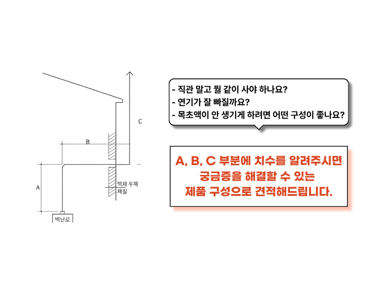

화목난로 설치가이드
올바른 연통 설치는
안전과 배기효율의 시작입니다.
설치 전 반드시 확인해야 할
기본 원칙을 안내합니다.

기본 설치 순서
배기 효율과 안전을 고려한 일반적인 설치 순서입니다.
난로 연결
난로 출구와 단관을 정확하게 연결합니다.
T 설치
청소와 유지관리를 위해 T를 설치합니다.
벽 또는 지붕 관통
관통부에는 이중연통 사용을 권장합니다.
수직 연통
충분한 높이를 확보하여 배기효율을 높입니다.
빗물막이 설치
최종 마감 부속품을 설치합니다.
설치 시 주의사항
안전한 화목난로 사용을 위해 반드시 확인해야 하는 사항입니다.
90° 엘보 최소화
급격한 방향 전환은 배기 저항을 증가시켜 그을음과 타르가 쌓일 가능성을 높일 수 있습니다.
충분한 수직 높이 확보
수직 연통의 높이가 충분해야 안정적인 배기와 연기 배출에 도움이 됩니다.
관통부는 이중연통 사용
벽이나 지붕을 통과하는 구간은 단열 구조의 이중연통 사용을 권장합니다.
정기 점검
설치 후에도 연결부와 연통 내부를 정기적으로 확인하는 것이 좋습니다.
설치 전 체크리스트
설치 전에 아래 내용을 확인해 보세요.
✓ 난로 연통 규격 확인
난로의 배기구 직경과 연통 규격이 일치하는지 확인합니다.
✓ 설치 위치 확인
벽 관통인지 지붕 관통인지에 따라 필요한 부속품이 달라질 수 있습니다.
✓ 필요한 부속품 확인
엘보, T, 빗물막이, 브라켓 등 필요한 구성품을 미리 확인합니다.
설치 환경에 맞는 연통 구성이 궁금하신가요?
설치 환경에 따라 필요한 연통과 부속품이 달라집니다.
제품 선택 전에 전문가와 상담해 보세요.